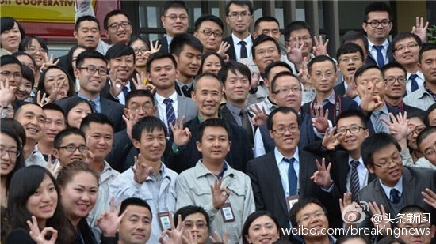
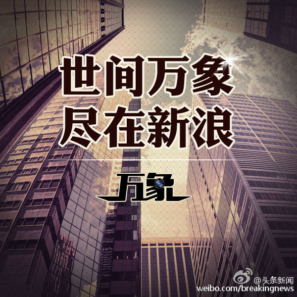

//@王海鹏Seal:一入佛门，取个法号的意思 //@玄了个澄的: 腾讯不知道，阿里的花名文化主要还是为了塑造团体意识增强企业文化凝聚力吧。一进阿里本名基本就可以忘了 //@Ada李力:阿里员工用金庸书中别名，腾讯员工要起英文名，就是为了避免称呼职位头衔的文化吧。@头条新闻:#万象#【上海万科禁止内部称呼“总” 违者罚款100元】近日，上海万科内部文件流出，提到为推动合伙人以开放包容的心态、更亲密无间的协作共创共担共享，公司决定执行无“总”称谓要求，日常工作场合、会议场合或是邮件、微信等沟通过程，均按此执行，违者每次罚款100元。上海万科禁止内部称呼“总” 你怎么看 
 上海万科禁止内部称呼“总” 你怎么看
上海万科禁止内部称呼“总” 你怎么看